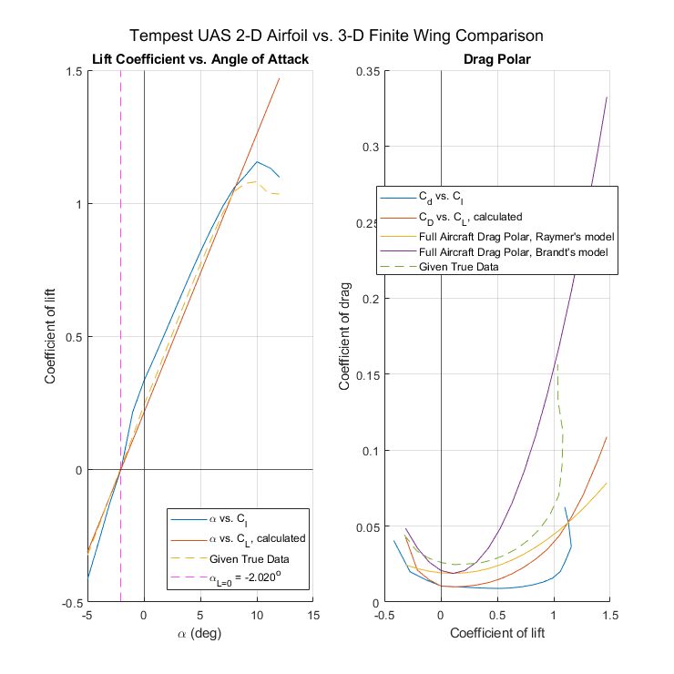
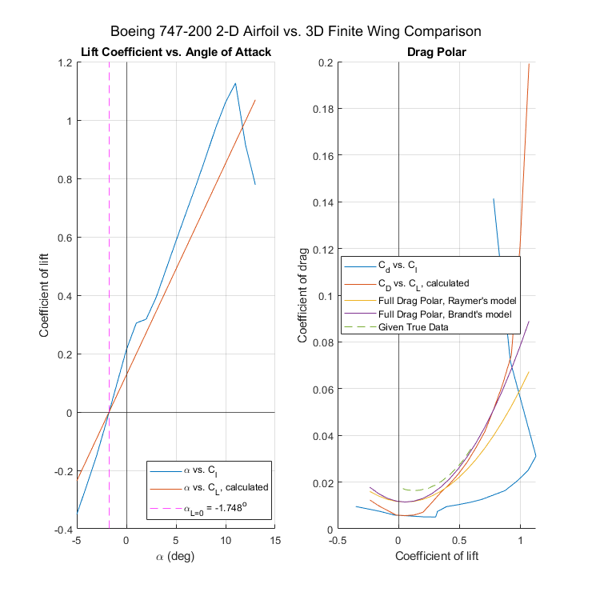

Contents
ASEN 2004 Lab 1 Milestone 1
By: Ian Faber
Started: 1/17/2022, 12:11 PM
Finished:
clc; clear; close all;
e = 0.9;
[sheetStatus, sheetNames] = xlsfinfo('Tempest UAS & B747 Airfoil and CFD Data for ASEN 2004 Aero Lab (Spr22).xlsx');
numSheets = length(sheetNames);
for k = 1:numSheets
sheetData{k} = xlsread('Tempest UAS & B747 Airfoil and CFD Data for ASEN 2004 Aero Lab (Spr22).xlsx', sheetNames{k});
end
Tempest2D = cell2mat(sheetData(1,2));
TempestTrue = cell2mat(sheetData(1,3));
Boeing2D = cell2mat(sheetData(1,5));
BoeingTrue = cell2mat(sheetData(1,6));
Tempest UAS Analysis and Plotting
SWetTempest = 2.285;
SRefTempest = 0.667;
CfeTempest = 0.0055;
ARTempest = 16.5;
LESweepAngleTempest = 0;
Tempest2DAlphas = Tempest2D(:,1);
TempestCl = Tempest2D(:,2);
TempestCd = Tempest2D(:,3);
TempestRe = Tempest2D(1,5);
TempestTrueAlphas = TempestTrue(:,1);
TempestTrueCL = TempestTrue(:,2);
TempestTrueCD = TempestTrue(:,3);
start = find(Tempest2DAlphas == -5);
stop = find(Tempest2DAlphas == 6);
[coef, a0Curve] = leastSquares(Tempest2DAlphas(start:stop),TempestCl(start:stop),1);
a0 = coef(1)
a = a0/(1+((57.3*a0)/(pi*e*ARTempest)))
[coef, approxCurve] = leastSquares(Tempest2DAlphas(1:stop-7),TempestCl(1:stop-7),5);
alphaL0 = fzero(approxCurve, -2)
TempestCL = a*(Tempest2DAlphas - alphaL0);
TempestCD = TempestCd + ((TempestCL.^2)/(pi*e*ARTempest));
e0 = 1.78*(1-0.045*(ARTempest)^0.68)-0.64;
k1 = 1/(pi*e0*ARTempest);
CDmin = CfeTempest*(SWetTempest/SRefTempest);
[minCD, index] = min(TempestCD);
CLminD = TempestCL(index)
k2 = -2*k1*CLminD;
CDo = CDmin + k1*(CLminD)^2;
TempestFullCDRaymer = CDo + k1*TempestCL.^2 + k2*TempestCL;
e0 = 4.61*(1-0.045*(ARTempest)^0.68)*cos(LESweepAngleTempest)^0.15 - 3.1;
k1 = 1/(pi*e0*ARTempest);
CDmin = CfeTempest*(SWetTempest/SRefTempest);
[minCD, index] = min(TempestCD);
CLminD = TempestCL(index)
k2 = -2*k1*CLminD;
CDo = CDmin + k1*(CLminD)^2;
TempestFullCDBrandt = CDo + k1*TempestCL.^2 + k2*TempestCL;
T = figure();
T.Position = [100 100 740 740];
sgtitle("Tempest UAS 2-D Airfoil vs. 3-D Finite Wing Comparison")
subplot(1,2,1)
hold on;
grid on;
TempestAlphaCl2D = plot(Tempest2DAlphas, TempestCl);
TempestAlphaCL = plot(Tempest2DAlphas, TempestCL);
TempestAlphaCLTrue = plot(TempestTrueAlphas, TempestTrueCL, '--');
alpha0Line = xline(alphaL0,'m--');
alpha0Label = sprintf("\\alpha_{L=0} = %.3f^o", alphaL0);
xline(0);
yline(0);
subset = [TempestAlphaCl2D, TempestAlphaCL, TempestAlphaCLTrue, alpha0Line];
titles = ["\alpha vs. C_l", "\alpha vs. C_L, calculated", "Given True Data", alpha0Label];
title('Lift Coefficient vs. Angle of Attack')
xlabel('\alpha (deg)')
ylabel('Coefficient of lift')
legend(subset, titles, 'Location', 'best');
hold off;
subplot(1,2,2)
grid on;
hold on;
TempestDragPolar2D = plot(TempestCl, TempestCd);
TempestDragPolar3D = plot(TempestCL, TempestCD);
TempestRaymerFullDragPolar = plot(TempestCL, TempestFullCDRaymer);
TempestBrandtFullDragPolar = plot(TempestCL, TempestFullCDBrandt);
TempestDragPolarTrue = plot(TempestTrueCL, TempestTrueCD, '--');
xline(0);
yline(0);
subset = [TempestDragPolar2D, TempestDragPolar3D, TempestRaymerFullDragPolar, TempestBrandtFullDragPolar, TempestDragPolarTrue];
titles = ["C_d vs. C_l", "C_D vs. C_L, calculated", "Full Aircraft Drag Polar, Raymer's model", "Full Aircraft Drag Polar, Brandt's model", "Given True Data"];
title('Drag Polar')
xlabel('Coefficient of lift')
ylabel('Coefficient of drag')
legend(subset, titles, 'Location', 'best')
hold off;
a0 =
0.1203
a =
0.1048
alphaL0 =
-2.0203
CLminD =
0.1070
CLminD =
0.1070

Boeing 747-200 Analysis and Plotting
SWetBoeing = 2175.93;
SRefBoeing = 569.52;
CfeBoeing = 0.003;
ARBoeing = 7;
LESweepAngleBoeing = atan2(75, 100);
Boeing2DAlphas = Boeing2D(:,1);
BoeingCl = Boeing2D(:,2);
BoeingCd = Boeing2D(:,3);
BoeingRe = Boeing2D(1,5);
BoeingTrueCL = BoeingTrue(:,1);
BoeingTrueCD = BoeingTrue(:,2);
start = find(Boeing2DAlphas == -5);
stop = find(Boeing2DAlphas == 6);
[coef, a0Curve] = leastSquares(Boeing2DAlphas(start:stop),BoeingCl(start:stop),1);
a0 = coef(1)
a = a0/(1+((57.3*a0)/(pi*e*ARBoeing)))
[coef, approxCurve] = leastSquares(Boeing2DAlphas(1:stop-7),BoeingCl(1:stop-7),5);
alphaL0 = fzero(approxCurve, -2)
BoeingCL = a*(Boeing2DAlphas - alphaL0);
BoeingCD = BoeingCd + ((BoeingCL.^2)/(pi*e*ARBoeing));
e0 = 1.78*(1-0.045*(ARBoeing)^0.68)-0.64;
k1 = 1/(pi*e0*ARBoeing);
CDmin = CfeBoeing*(SWetBoeing/SRefBoeing);
[minCD, index] = min(BoeingCD);
CLminD = BoeingCL(index)
k2 = -2*k1*CLminD;
CDo = CDmin + k1*(CLminD)^2;
BoeingFullCD = CDo + k1*BoeingCL.^2 + k2*BoeingCL;
e0 = 4.61*(1-0.045*(ARBoeing)^0.68)*cos(LESweepAngleBoeing)^0.15 - 3.1;
k1 = 1/(pi*e0*ARBoeing);
CDmin = CfeBoeing*(SWetBoeing/SRefBoeing);
[minCD, index] = min(BoeingCD);
CLminD = BoeingCL(index)
k2 = -2*k1*CLminD;
CDo = CDmin + k1*(CLminD)^2;
BoeingFullCDBrandt = CDo + k1*BoeingCL.^2 + k2*BoeingCL;
B = figure();
B.Position = [940 100 740 740];
sgtitle("Boeing 747-200 2-D Airfoil vs. 3D Finite Wing Comparison")
subplot(1,2,1)
hold on;
grid on;
BoeingAlphaCl2D = plot(Boeing2DAlphas, BoeingCl);
BoeingAlphaCL = plot(Boeing2DAlphas, BoeingCL);
alpha0Line = xline(alphaL0,'m--');
alpha0Label = sprintf("\\alpha_{L=0} = %.3f^o", alphaL0);
xline(0);
yline(0);
subset = [BoeingAlphaCl2D, BoeingAlphaCL, alpha0Line];
titles = ["\alpha vs. C_l", "\alpha vs. C_L, calculated", alpha0Label];
title('Lift Coefficient vs. Angle of Attack')
xlabel('\alpha (deg)')
ylabel('Coefficient of lift')
legend(subset, titles, 'Location', 'best');
hold off;
subplot(1,2,2)
grid on;
hold on;
BoeingDragPolar2D = plot(BoeingCl, BoeingCd);
BoeingDragPolar3D = plot(BoeingCL, BoeingCD);
BoeingRaymerFullDragPolar = plot(BoeingCL, BoeingFullCD);
BoeingBrandtFullDragPolar = plot(BoeingCL, BoeingFullCDBrandt);
BoeingDragPolarTrue = plot(BoeingTrueCL, BoeingTrueCD, '--');
xline(0);
yline(0);
subset = [BoeingDragPolar2D, BoeingDragPolar3D, BoeingRaymerFullDragPolar, BoeingBrandtFullDragPolar, BoeingDragPolarTrue];
titles = ["C_d vs. C_l", "C_D vs. C_L, calculated", "Full Drag Polar, Raymer's model", "Full Drag Polar, Brandt's model", "Given True Data"];
title('Drag Polar')
xlabel('Coefficient of lift')
ylabel('Coefficient of drag')
legend(subset, titles, 'Location', 'best')
hold off;
function [X,f] = leastSquares(t,y,p)
A = [];
for ii = 0:p
col = t.^ii;
A = [col, A];
end
x_hat = A\y;
X = x_hat;
while length(x_hat) < 7
x_hat = [0;x_hat];
end
f = @(x) x_hat(1)*x.^6 + x_hat(2)*x.^5 + x_hat(3)*x.^4 + x_hat(4)*x.^3 + x_hat(5)*x.^2 + x_hat(6)*x + x_hat(7);
end
a0 =
0.0917
a =
0.0725
alphaL0 =
-1.7479
CLminD =
0.0542
CLminD =
0.0542
